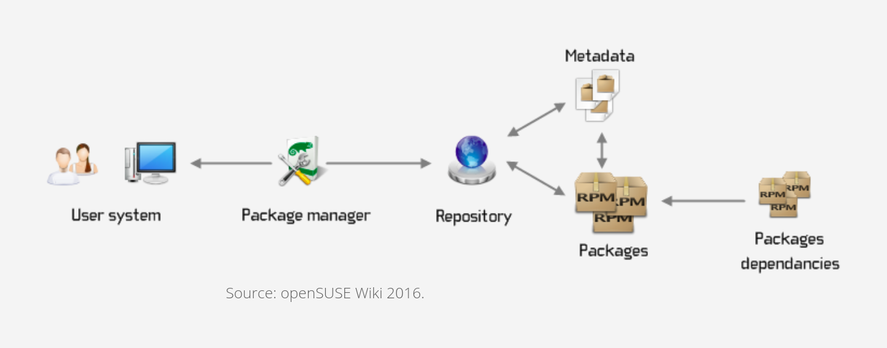
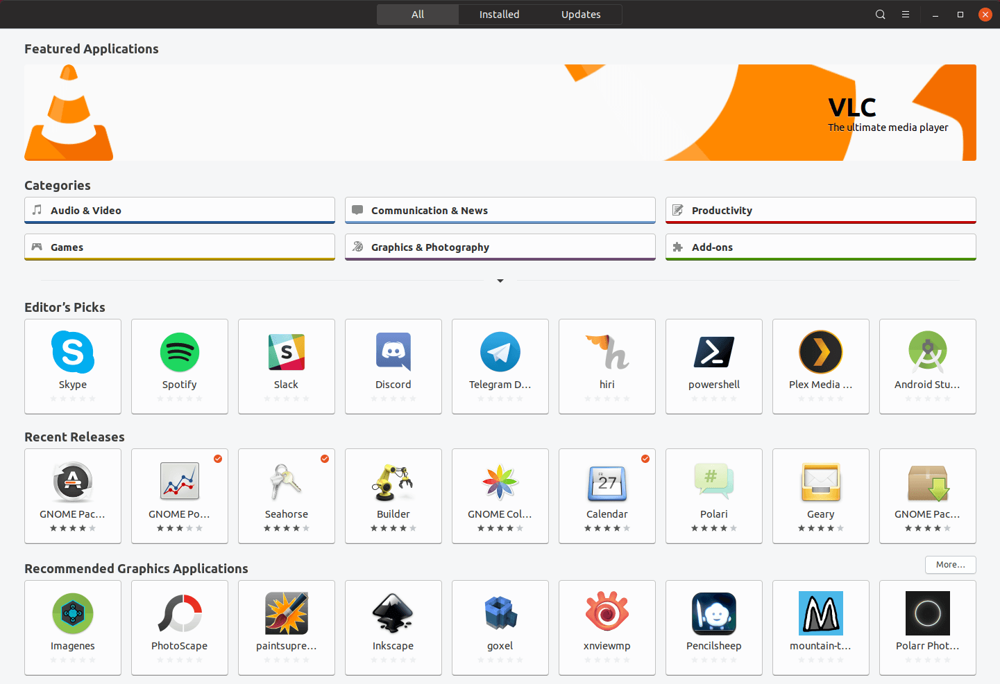

Linux Package Managers

In this post, we will see installation methods used in Linux distributions
When you use Linux, there are be different methods of software installation. Some of the methods I will try to cover in this post Before we learn about the package managers, let’s see what they do for us

- Package managers help us to install, uninstall Linux software from the trusted repositories
- They also help us to fetch dependencies required to install the current package to install in a single command
- They help to standardise the locations and configuration files at a fixed location decided by the Linux distribution
Using package managers

We have something called Debian Package Management System which is base for most of the Debian based Linux distributions systems.
Under this, we use different package managers
Apt (Advanced packaging tool)
Some of the commands and its usage are as follows
| Command | Usage |
|---|---|
sudo apt update |
Update package database |
sudo apt upgrade |
Upgrade all system packages |
sudo apt update && <br>sudo apt upgrade -y |
Update and Upgrade in single command |
sudo apt install <package_name |
Install specifid package |
sudo apt remove |
Remove package |
sudo apt purge |
Removes package including its the configuration files |
sudo apt search <search term>` |
Search for package information in package database |
sudo apt show <package_name>` |
Shows the contents of the package |
sudo apt list --upgradeable |
Shows all packages for which updates are available |
sudo apt list --installed |
Shows list of installed packages |
sudo apt autoremove |
Remove useless packages which got installed with other softwares but now not needed |
Aptitude Package Manager this works similar like apt package manager
| Command | Usage |
|---|---|
aptitude install <package_name> |
Install |
aptitude search <package_name> |
Search |
aptitude search ~i |
List installed packages |
aptitude remove <package_name> |
Remove |
aptitude search ~D<package_name> |
List reverse dependencies |
aptitude versions <package_name> |
Print information on priorities for |
aptitude show <package_name> |
Show package information for |
aptitude source <package_name> |
Download |
- Using dpkg tool
Next comes RPM (Red Hat Package Manager)
Here we have YUM (Yellowdog Updater, Modified) which is now updated with DNF – Dandified Yum
| Command | Usage |
|---|---|
dnf install <pkg> |
Install package |
dnf install httpd-manual -y |
While doing installation it assumes Yes |
dnf check-update |
Check for Updates |
dnf update <pkg> -y |
Updates pkg |
dnf download <pkg> |
Download RMP package |
dnf install pkg.rpm |
Install local package |
dnf remove pkg |
Uninstall package |
dnf reinstall pkg -y |
Reinstall package |
dnf repolist |
View the repository informinstallationation |
dnf search pkg |
Search for specific package information |
dnf info pkg |
See package information |
dnf history |
VIew the history of the dnf commands /transcations |
dnf clean all |
Clear Cached Information |
Pacman Package Manager Arch Linux
pacman is used in arch based distributions like manjaro linux
Common Commands
| Command | Usage |
|---|---|
pacman -Syu <pkg> |
Install (and update package list) |
pacman -S <pkg> |
Install only |
pacman -Rsc <pkg> |
Uninstall |
pacman -Ss <keywords> |
Search |
pacman -Syu |
Upgrade everything |
installation Query
| Command | Usage |
|---|---|
pacman -Qe |
List explictly-installed packages |
pacman -Ql |
|
pacman -Qii |
|
pacman -Qo |
|
pacman -Qs |
Orphans
| Command | Usage |
|---|---|
pacman -Qdt |
List unneeded packages |
pacman -Rns $(pacman -Qdtq) |
Uninstall unneeded packages |
Other
| Command | Usage |
|---|---|
pactree <pkg> |
What does pkg depend on? |
pactree -r <pkg> |
What depends on pkg? |
If you dont like to work with commands, there are also the Graphical Package Managers as shown below
Ubuntu Software Center

Fedora Software center

Synaptic Package Manager

Pamac Manager